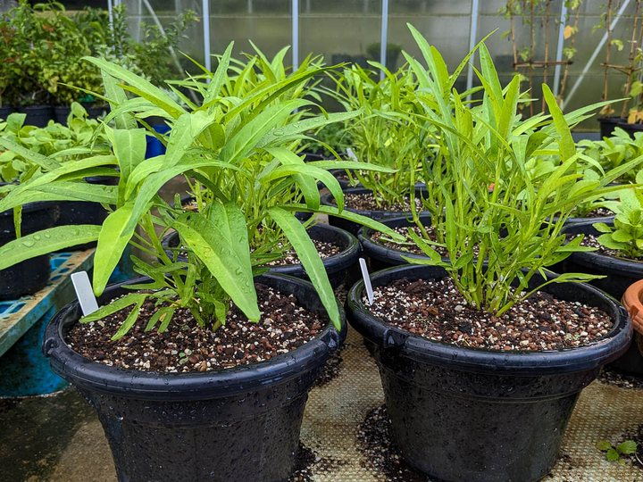
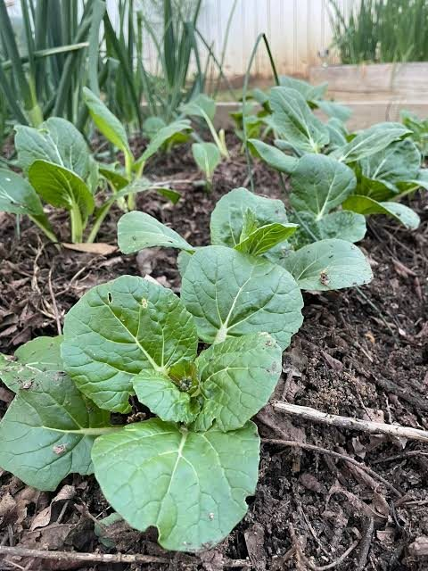
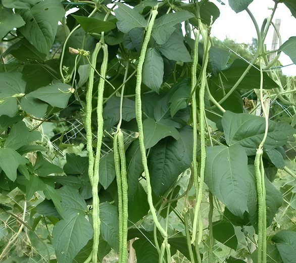
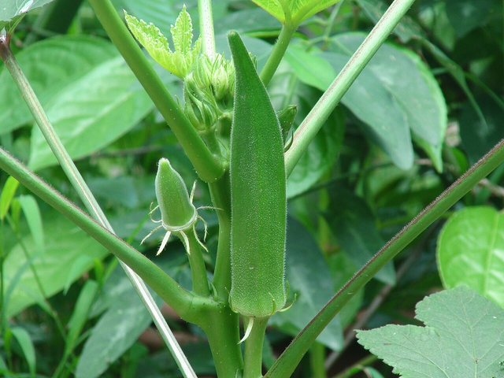
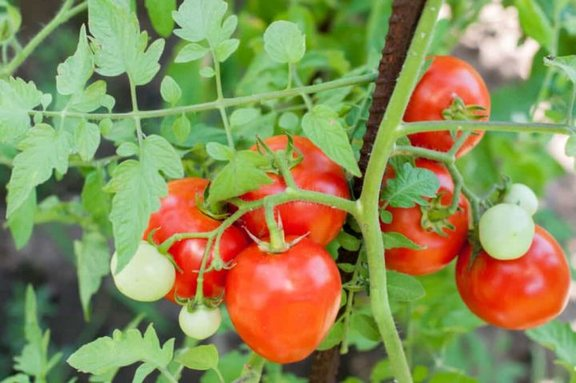
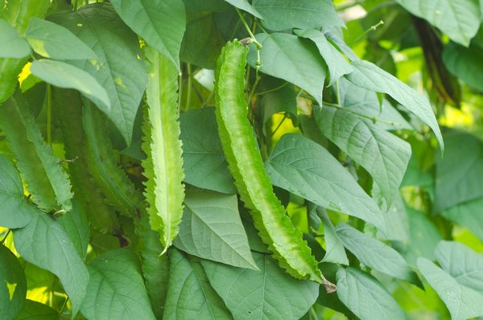
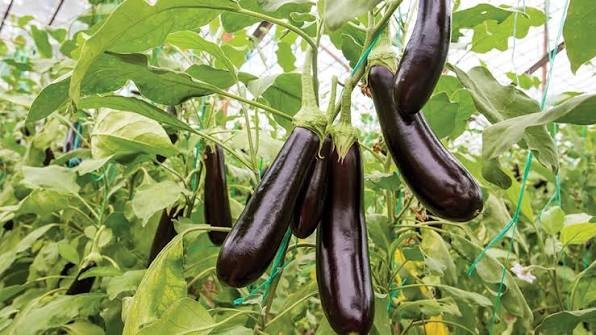
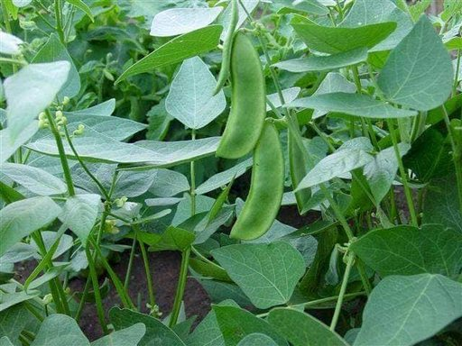
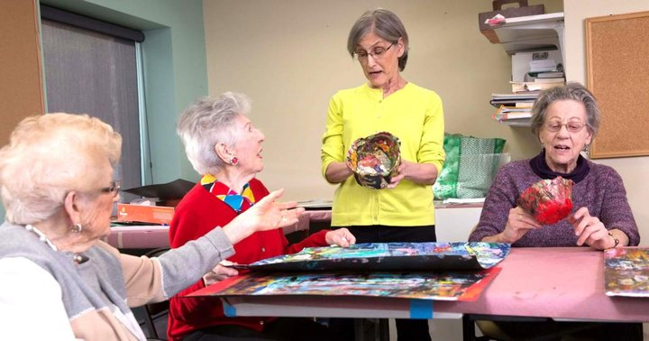

Agriculture & SustainabilityAgriculture and Sustainability
Cultivating green spaces and food security in Las Pinas through seeds, urban gardening, and collective action.
Seed Library Directory

Pechay (Chinese Cabbage)

Sitaw (Yardlong Bean)

Okra (Lady's Finger)

Kamatis (Native Tomato)

Sigarilyas (Winged Bean)

Talong (Native Eggplant)

Patani (Lima Bean)

Crafting & Upcycling
with Seniors
Join our therapeutic crafting sessions hosted in partnership with local senior care facilities. We create meaningful intergenerational connections through hands-on upcycling projects, artistic expression, and shared community storytelling.
Register for WorkshopUpcoming Workshops
November 5, 2026
Crafting & Upcycling
with Seniors
with Seniors
November 15, 2026
Crafting & Upcycling
with Seniors
with Seniors
November 25, 2026
Crafting & Upcycling
with Seniors
with Seniors
Community Craft Gallery
GET INVOLVED
Cultivating green spaces and food security in Las Pinas through seeds, urban gardening, and collective action.
Step-by-step volunteer process
Step 1
Choose Track
Select Agriculture or Crafting
Step 2
Register & Attend
Attend orientations and sessions
Step 3
Log & Certify
Earn hours and request certification
Volunteer Registration
Ready to lend a hand? We coordinate all volunteer batches, task assignment, and schedule confirmations through our official registration portal.
What to prepare
- Valid Student / Government ID
- Preferred Schedule
- Preferred Track
Open registration form
Opens as external Google Form · Takes 3 minutes to complete
Service Hour Validation Guidelines
- Suitable for NTSP / CHED community hours
- Minimum 4-hour volunteer sessions
- Active task validation by site coordinators
- Digital certificate issued upon completion
Frequently Asked Questions
Students, residents, and community gardeners from Las Piñas and nearby areas. You will need a valid student or government ID when you register.
For planting days, wear closed shoes and clothes you don't mind getting muddy. For craft workshops, wear something comfortable that can handle a little paint.
Site coordinators log your attendance and tasks every session. Once you finish the required hours, request your digital certificate.